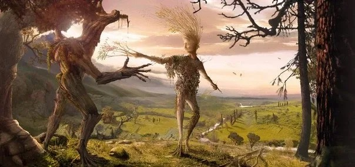

Древобород — один из самых древних энтов Средиземья и хранитель леса Фангорн.
Он помогает Мерри и Пиппину, а затем ведёт энтов против Изенгарда.

Фимбретиль — давно потерянная жена энта Древоборода, также известная как Тонконожка и Легконогая.
Пара любила друг друга еще до того, как Моргот впервые пришел к власти во времена юности мира.